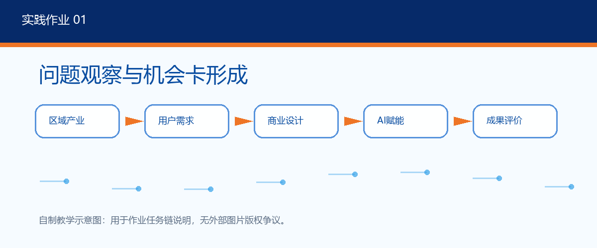
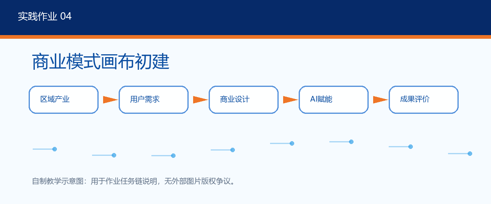
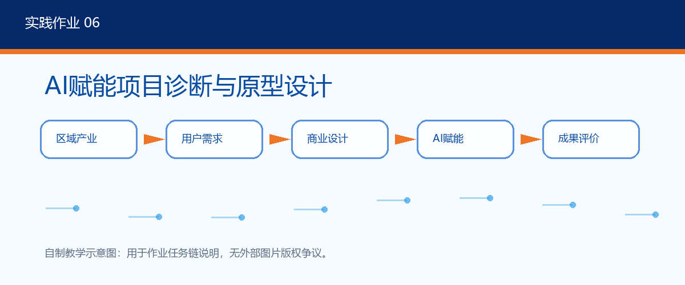
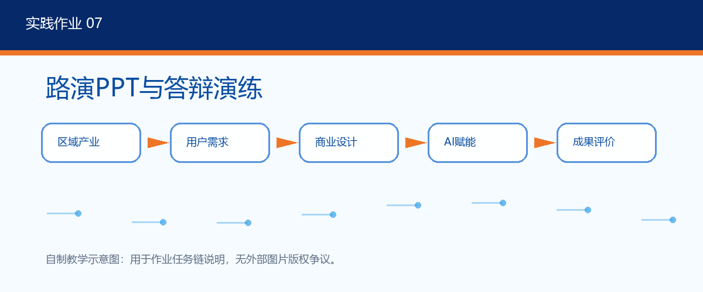
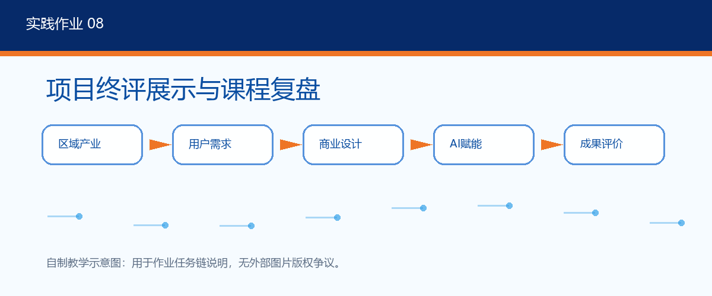
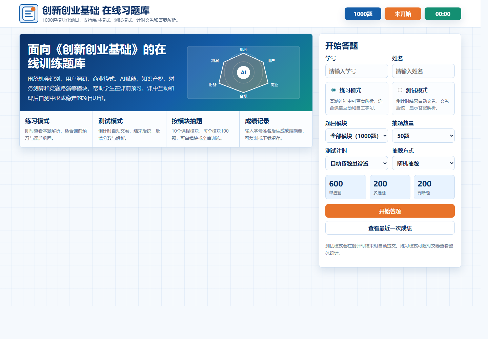
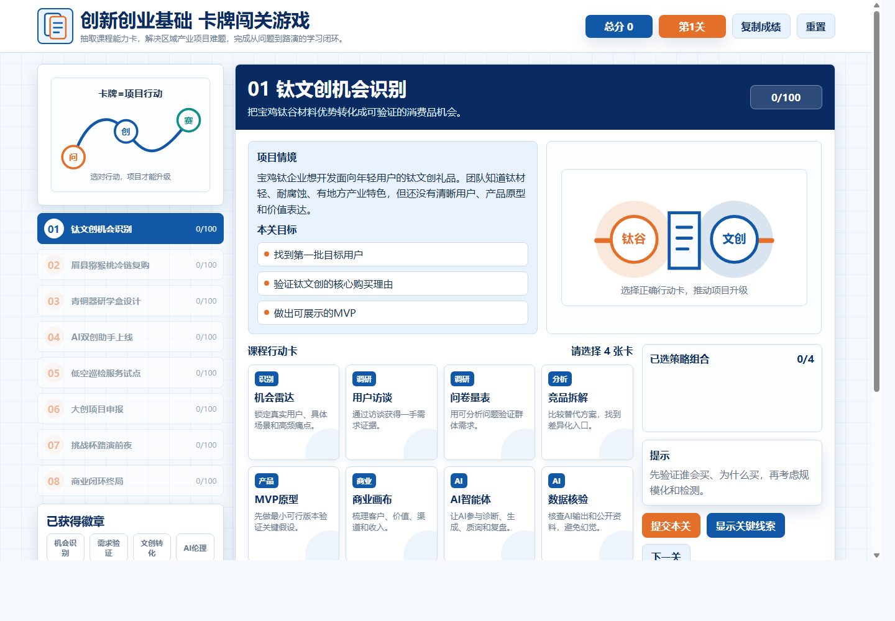

AI项目诊断工作台
实践课06
输入：项目背景、目标用户、现有方案、访谈摘要、竞品信息。
诊断：用户痛点是否清晰，价值主张是否可验证，MVP是否足够小。
输出：问题清单、假设优先级、原型建议、数据核验和伦理边界。
留痕：记录AI回复、人工判断、采纳原因和下一轮迭代动作。
打开实践作业06
把AI工具从“内容生成”拓展为调研整理、项目诊断、方案迭代、原型构思和路演问答的学习支架。
课堂中将AI嵌入每一轮迭代，但始终保留“真实调研、人工判断、证据核验”的学习要求。
记录具体场景、利益相关者和痛点证据。
用访谈提纲、问卷和竞品表核验假设。
形成商业画布、价值主张和关键资源。
让AI辅助检查用户、产品、数据和风险。
输出MVP说明、证据链、路演PPT和复盘。
以下资源对应具体作业，可作为学生项目包的过程性证据。

记录问题场景、用户对象和初步机会，建立项目起点。

从价值主张、渠道、收入和关键资源形成项目商业逻辑。

形成AI诊断表、Prompt记录、MVP说明表和原型图。

把调研、验证、原型和价值表达整理为可答辩的路演材料。

提交终版项目包、展示PPT、复盘报告和个人反思。

卡牌闯关游戏将“机会雷达、用户访谈、MVP原型、AI智能体、数据核验、伦理合规、知识产权、路演证据链”等行动卡组织成项目决策训练。
